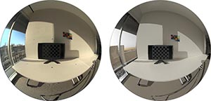
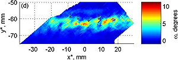

Follow these links to some of my published work or see my listings on ORCID, Scopus, ResearchGate, or Google Scholar.

{kind=link}
Effects of real-time simulation feedback on design for visual comfort
Journal Article, 2018
Nathaniel L. Jones and Christoph F. Reinhart • Journal of Building Performance Simulation • DOI: 10.1080/19401493.2018.1449889
{kind=link}
From Radiance to real-time and virtual reality
Conference Presentation, 2017
Nathaniel L. Jones • DIVA Day 2017 • Berkeley, California • October 27, 2017
{kind=link}
Speedup potential of climate-based daylight modelling on GPUs
Conference Paper, 2017
Nathaniel L. Jones and Christoph F. Reinhart • 15th International Conference of the International Building Performance Simulation Association • San Francisco, California • August 7-9, 2017 • DOI: 10.26868/25222708.2017.259

Validated interactive daylighting analysis for architectural design
Thesis, 2017
Nathaniel L. Jones • PhD Thesis • Massachusetts Institute of Technology • Cambridge, Massachusetts • May 2017
Importance of real-time: The effect of latency in scientific visualization
Conference Poster, 2017
Nathaniel L. Jones • New England Symposium on Graphics • Cambridge, Massachusetts • April 23, 2017
{kind=link}
Experimental validation of ray tracing as a means of image-based visual discomfort prediction
Journal Article, 2017
Nathaniel L. Jones and Christoph F. Reinhart • Building and Environment • Volume 113, Pages 131-150 • DOI: 10.1016/j.buildenv.2016.08.023
Special issue on advances in daylighting and visual comfort research
2017 Best Paper Award from Building and Environment
{kind=link}
Speeding up daylighting design and glare prediction workflows with Accelerad
Conference Presentation, 2016
Nathaniel L. Jones • DIVA Day 2016 • Toronto, Ontario, Canada • September 30, 2016
{kind=link}
Real-time visual comfort feedback for architectural design
Conference Paper, 2016
Nathaniel L. Jones and Christoph F. Reinhart • 32nd International Conference on Passive and Low Energy Architecture • Los Angeles, California • July 11-13, 2016
{kind=link}
Fast answers to complex problems for dummies
Conference Presentation, 2016
Nathaniel L. Jones • 2016 ASHRAE Annual Conference • St. Louis, Missouri • June 25-29, 2016
Watch presentation (requires login) or audio

Parallel multiple-bounce irradiance caching
Journal Article, 2016
Nathaniel L. Jones and Christoph F. Reinhart • Computer Graphics Forum • Volume 35, Issue 4, Pages 57-66 • July 27, 2016 • DOI: 10.1111/cgf.12949
27th Eurographics Symposium on Rendering • Dublin, Ireland • June 22-24, 2016

{kind=link}
Validation of GPU lighting simulation in naturally and artificially lit spaces
Conference Paper, 2015
Nathaniel L. Jones and Christoph F. Reinhart • 14th International Conference of the International Building Performance Simulation Association • Hyderabad, India • December 7-9, 2015

Fast daylight coefficient calculation using graphics hardware
Conference Paper, 2015
Nathaniel L. Jones and Christoph F. Reinhart • 14th International Conference of the International Building Performance Simulation Association • Hyderabad, India • December 7-9, 2015
GPU-enabled lighting simulation with Accelerad
Conference Presentation, 2015
Nathaniel L. Jones and Christoph F. Reinhart • 14th International Radiance Workshop • Philadelphia, Pennsylvania • August 17-19, 2015

Accelerad: Daylight simulation for architectural spaces using GPU ray tracing
Conference Presentation, 2015
Designing better workplaces through fast daylighting simulation with Accelerad
Poster, 2015
Nathaniel L. Jones and Christoph F. Reinhart • GPU Technology Conference • San Jose, California • March 17-20, 2015
{kind=link}
Irradiance caching for global illumination calculation on graphics hardware
Conference Paper, 2014
Nathaniel L. Jones and Christoph F. Reinhart • 2014 ASHRAE/IBPSA-USA Building Simulation Conference • Atlanta, Georgia • September 10-12, 2014
Watch presentation (requires login) or audio
{kind=link}
Physically based global illumination calculation using graphics hardware
Conference Paper, 2014
Nathaniel L. Jones and Christoph F. Reinhart • eSim 2014: The Canadian Conference on Building Simulation • Ottawa, Ontario, Canada • May 7-10, 2014

Automated translation and thermal zoning of digital building models for energy analysis
Conference Paper, 2013
Nathaniel L. Jones, Colin J. McCrone, Bruce J. Walter, Kevin B. Pratt and Donald P. Greenberg • 13th International Conference of the International Building Performance Simulation Association • Chambéry, France • August 26-28, 2013
{kind=link}
Sustain: An experimental test bed for building energy simulation
Journal Article, 2013
Donald Greenberg, Kevin Pratt, Brandon Hencey, Nathaniel Jones, Lars Schumann, Justin Dobbs, Zhao Dong, David Bosworth and Bruce Walter • Energy and Buildings • Volume 58, March 2013, Pages 44-57 • ISSN 0378-7788 • DOI: 10.1016/j.enbuild.2012.11.026
{kind=link}
Hardware accelerated computation of direct solar radiation through transparent shades and screens
Conference Paper, 2012
Nathaniel L. Jones and Donald P. Greenberg • 5th National Conference of the International Building Performance Simulation Association-USA • Madison, Wisconsin • August 1-3, 2012

Automated translation of architectural models for energy simulation
Conference Paper, 2012
Kevin B. Pratt, Nathaniel L. Jones, Lars Schumann, David E. Bosworth and Andrew D. Heumann • 2012 Proceedings of the Symposium on Simulation for Architecture and Urban Design • Orlando, Florida • March 26-28, 2012
SimAUD 2012 Outstanding Paper Award
{kind=link}
Fast computer graphics techniques for calculating direct solar radiation on complex building surfaces
Journal Article, 2012
Nathaniel L. Jones, Donald P. Greenberg, and Kevin B. Pratt • Journal of Building Performance Simulation • Volume 5, Issue 5, Pages 300-312 • June 26, 2011 • DOI: 10.1080/19401493.2011.582154
{kind=link}
Fast computation of incident solar radiation from preliminary to final building design
Conference Paper, 2011
Nathaniel L. Jones and Donald P. Greenberg • 12th International Conference of the International Building Performance Simulation Association • Sydney, Australia • November 14-16, 2011
BS2011 Award for Best Research Paper
Republished in EcoLibrium (membership required) • September 2012 • Pages 44-53

Architecture as a complex adaptive system
Thesis, 2009
Nathaniel L. Jones • Master's Thesis • Cornell University • Ithaca, New York • May 2009

{kind=link}
Patterns of local displacements in shear bands in sands
Conference Paper, 2005
N. Jones and A.L. Rechenmacher • Proceedings of the 3rd Biot Conference on Poromechanics • Norman, Oklahoma • May 24-27, 2005 • DOI: 10.1201/NOE0415380416.ch118
©2018 Nathaniel Jones
Last updated 3/15/18
Last updated 3/15/18